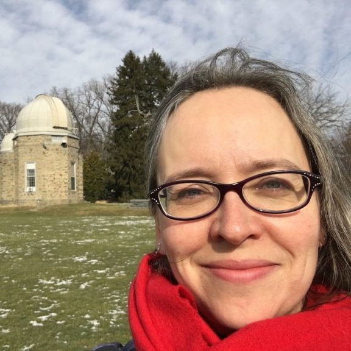
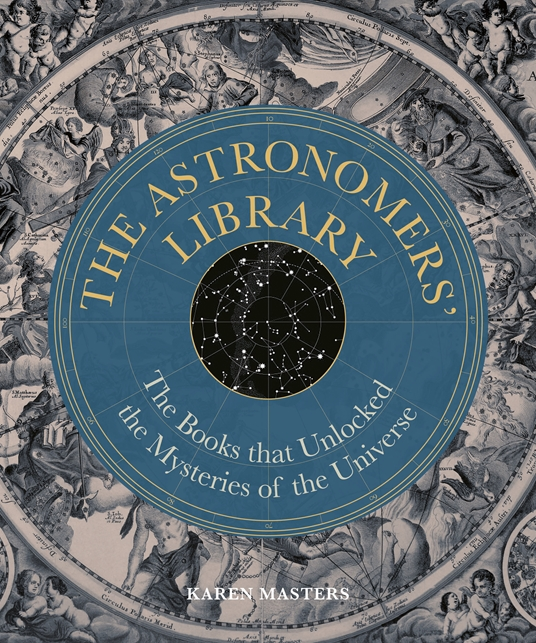
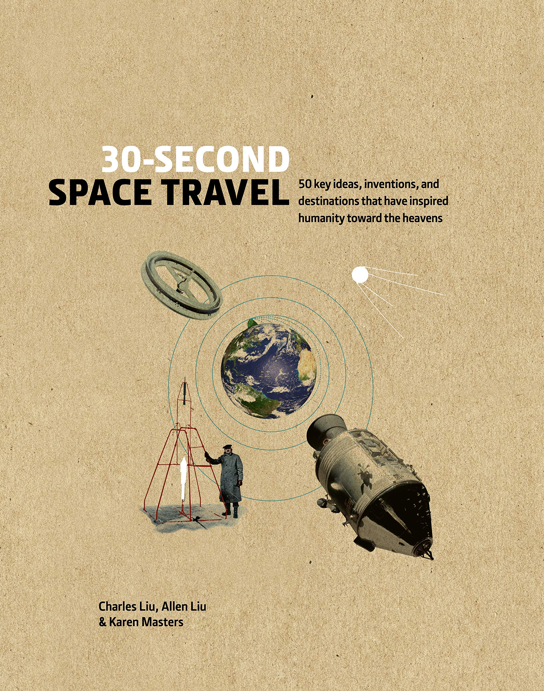
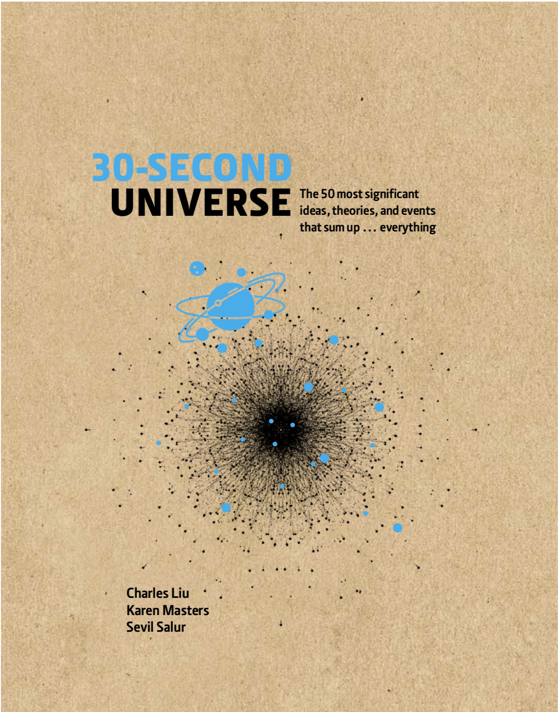

Welcome
Welcome to my website. I'm an astronomer interested in understanding galaxies in our Universe.
Please explore the tabs to learn about the work I do with colleagues and students.
You might be interested in my official Haverford Profile
Professor of Astronomy and Physics at Haverford College.
Welcome to my website. I'm an astronomer interested in understanding galaxies in our Universe.
Please explore the tabs to learn about the work I do with colleagues and students.
You might be interested in my official Haverford Profile

My research concerns galaxies in the Universe. I tend to work with large samples (thousands, or 100s of thousands) of galaxies where you can see visible internal structures. I have been most interested lately in what structures correlate with star formation – either active, or dying off, as well as the potential for future star formation (traced by the atomic hydrogen gas which can be observed in radio wavelengths).
As a Full Professor at Haverford College, my standard teaching responsibilty is five classes each academic year; one of these classes is usually allocated for supervising senior thesis and other student research, so I normally teach two other classes each semester.
I enjoy writing about science for a popular audience.



I’ve always done a lot of Outreach and Public Engagement all throughout my career..